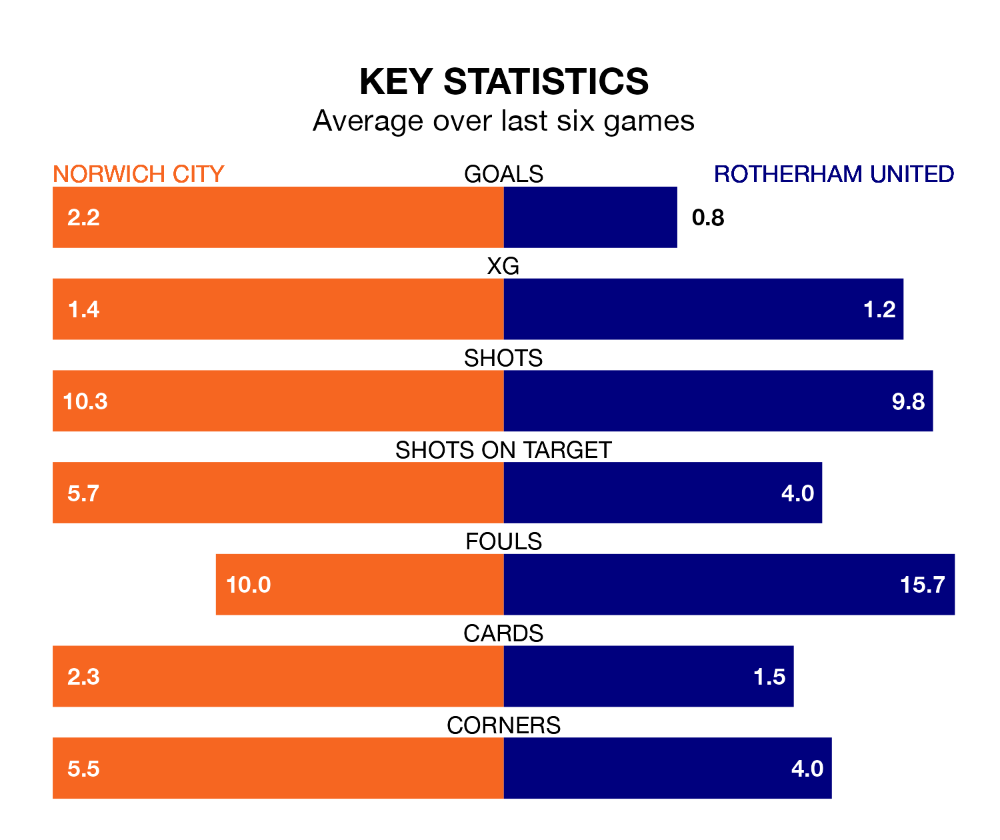

Rotherham United make the journey to Carrow Road to play Norwich City on Saturday looking to pick up points to end their eight-game losing streak.
Rotherham's struggles have left them with no points from their last six EFL Championship matches, while their opponents have earned 11 from a possible 18.
Rotherham are bottom of the table after 36 games, of which they have won three and drawn 10, earning 19 points.
Norwich are 17 places ahead of United in seventh, with 16 wins and seven draws putting them on 55 points.
With 30 goals in 36 games so far this season, the Millers are the league's joint-second-lowest scorers with 0.8 goals per game. And they are conceding more than average, letting in 72 goals at a rate of 2.0 per game.
City, meanwhile, are above average scorers, with 1.7 goals per game, compared to a league average of 1.4. They have conceded 1.5 goals per game.
In the last 10 years, Norwich and Rotherham have played each other on 12 occasions. Norwich won seven of them, Rotherham two, and they drew three times.
On average, the Canaries scored 1.6 goals and the Millers 1.0 in those matches.
Their last meeting was on September 2, when Rotherham won 2-1 at home.
In Jon Rowe, the Canaries have one of the league's sharpest shooters so far this season. He has notched 12 goals in 28 appearances, to sit sixth in the scoring charts.
The away side's top scorers, with four goals each, are Tom Eaves and Hakeem Odofin.
Norwich's last match was on Wednesday, a 3-1 loss against Middlesbrough, with Ashley Barnes getting the goal for the Canaries.
Rotherham lost 5-0 against Coventry City last time out, on Tuesday.
Saturday's match will be refereed by Charles Breakspear, who is taking charge of his first EFL Championship game this season.
He is yet to oversee a match featuring either Norwich or Rotherham this season.
Updated: 09:34 (UTC), 08/03/24